x <- rnorm(1000, 8)
y <- -4 + 2*x + rnorm(1000, sd = 1)
df <- tibble(x,y)
ggplot(df, aes(x,y)) + geom_point() +
theme_bw()
\[ y = \beta_0 + \beta_1 x + \epsilon \]
x <- rnorm(1000, 8)
y <- -4 + 2*x + rnorm(1000, sd = 1)
df <- tibble(x,y)
ggplot(df, aes(x,y)) + geom_point() +
theme_bw()
Errors are normally distributed
Constant Variance
Linearity
Independence
No outliers
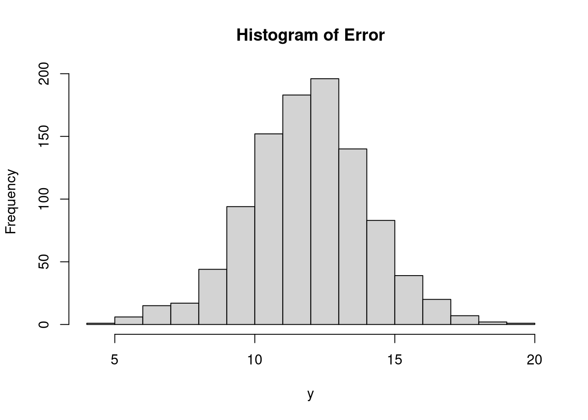
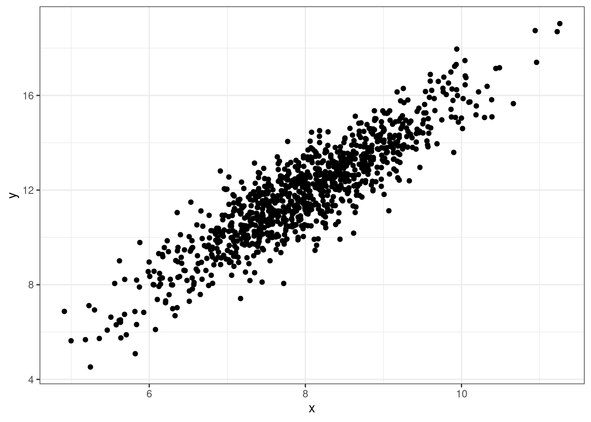
x <- rnorm(1000, 8, sd = 0.5)
y <- sapply(x, \(.) -4 + 5*. + rnorm(1, sd = ./2))
df <- tibble(x,y)
ggplot(df, aes(x,y)) + geom_point() +
theme_bw()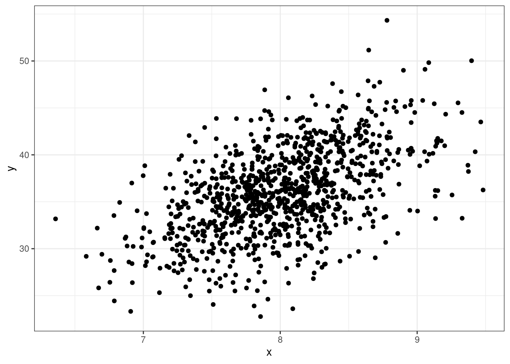
x <- rnorm(1000, 8)
y <- -4 + 2*x + rnorm(1000, sd = 1)
df <- tibble(x,y)
ggplot(df, aes(x,y)) + geom_point() +
theme_bw()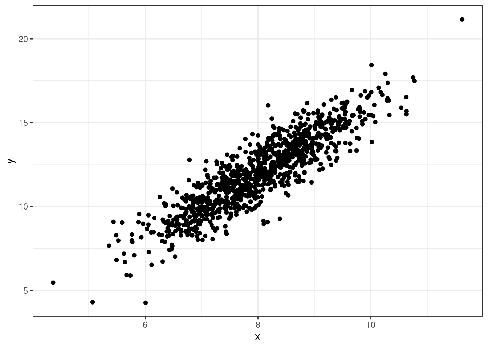
x <- rnorm(1000, 8, sd = 4)
y <- -4 - 1*x + -2*x^2 + rnorm(1000, sd = 16)
df <- tibble(x,y)
ggplot(df, aes(x,y)) + geom_point() +
theme_bw()
x <- rnorm(1000, 8)
y <- -4 + 2*x + rnorm(1000, sd = 1)
df <- tibble(x,y)
ggplot(df, aes(x,y)) + geom_point() +
theme_bw()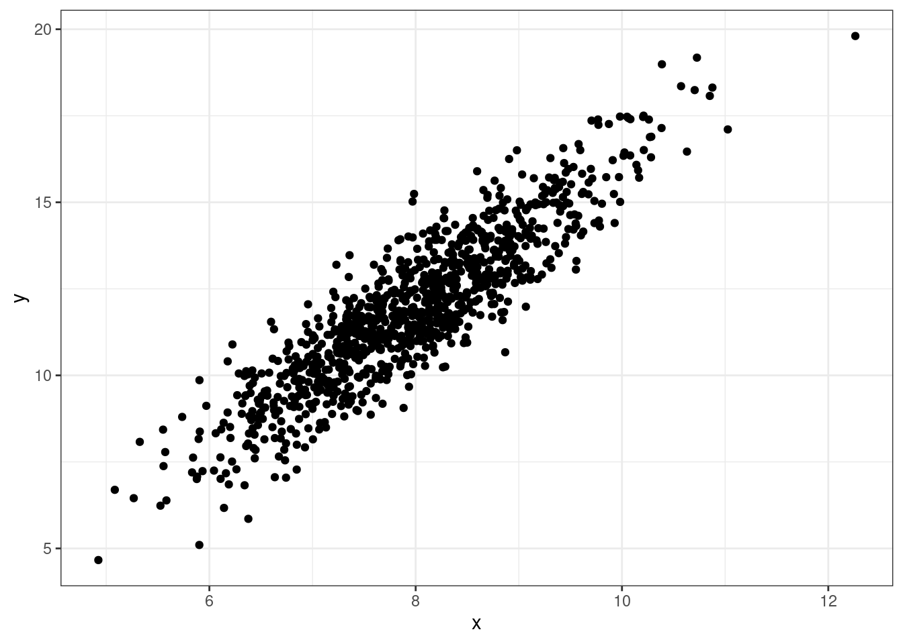
Residuals are the errors between the observed value and the estimated model. Common residuals include
Raw Residual
Standardized Residual
Jackknife (studentized) Residuals
Influential measures are statistics that determine how much a data point affects the model. Common influential measures are
Leverages
Cook’s Distance
\[ \hat r_i = y_i - \hat y_i \]
\[ H = \boldsymbol X (\boldsymbol X^\mathrm T\boldsymbol X)^{-1}\boldsymbol X ^\mathrm T \]
\(\boldsymbol X\): design matrix
\(h_i = H[i,i]\): leverage for \(i\)th value
\[ \hat r^*_i = \frac{\hat r_i}{\sqrt{\hat\sigma^2(1-h_{i})}} \]
\(\hat \sigma^2\): Mean square error
\(h_{ii}\): leverage of \(i\)th data point
\[ \hat r ^\prime_i = \frac{y_i - \hat y_{i(i)}}{\sqrt{\hat \sigma^2_{(i)}(1-h_{i})}} \]
\(\hat y_{i(i)}\): fitted value for \(i\)th value from model fitted without \(i\)th data point
\(\hat\sigma^2_{(i)}\): mean square error from model fitted without \(i\)th data point
\[ \hat d_i = \frac{(y_i - \hat y_{i})^2}{(k+1)\hat \sigma^2}\left\{\frac{h_i}{(1-h_i)^2}\right\} \]
A residual analysis is used to test the assumptions of linear regression.
A qq (quantile-quantile) plot will plot the estimated quantiles of the residuals against the theoretical quantiles from a normal distribution function. If the points from the qq-plot lie on \(y=x\), it is said that the residuals follow a normal distribution.
This plot allows you to assess the linearity, constant variance, and identify potential outliers. Create a scatter plot between the fitted values (x-axis) and the raw/standardized residuals (y-axis).
This plot helps identify issues with linearity and suggests potential solution. Create a scatter plot between raw/standardized residuals (y-axis) and the predictor variables (x-axis).
An outlier plot can tell you if there are any outliers in the data. Create a scatter plot between the index number (x-axis) and standardized/studentized residuals (y-axis)
Will identify outliers/observations that will have an affect on the model. Create a scatter plot between the index number (x-axis) and leverages/cook’s distance (y-axis).
Multicolinearity occurs when predictor variable have a correlation between each other. Collinearity between predictor variables with inflate the standard errors and cause problems with inference.
The variance inflation factor is a measurement on how much variables are collinear with each other. A value greater than 10 is a cause for concern and action should be taken.
x_lm <- iris |> lm(Petal.Length ~ Sepal.Length + Sepal.Width, data = _)
x_lm |> summary()#>
#> Call:
#> lm(formula = Petal.Length ~ Sepal.Length + Sepal.Width, data = iris)
#>
#> Residuals:
#> Min 1Q Median 3Q Max
#> -1.25582 -0.46922 -0.05741 0.45530 1.75599
#>
#> Coefficients:
#> Estimate Std. Error t value Pr(>|t|)
#> (Intercept) -2.52476 0.56344 -4.481 1.48e-05 ***
#> Sepal.Length 1.77559 0.06441 27.569 < 2e-16 ***
#> Sepal.Width -1.33862 0.12236 -10.940 < 2e-16 ***
#> ---
#> Signif. codes: 0 '***' 0.001 '**' 0.01 '*' 0.05 '.' 0.1 ' ' 1
#>
#> Residual standard error: 0.6465 on 147 degrees of freedom
#> Multiple R-squared: 0.8677, Adjusted R-squared: 0.8659
#> F-statistic: 482 on 2 and 147 DF, p-value: < 2.2e-16df_resid <- tibble(obs = 1:nrow(x_lm$model),
x_lm$model,
resid = resid(x_lm),
fitted = fitted(x_lm),
sresid = rstandard(x_lm),
hatvals = hatvalues(x_lm),
jackknife = rstudent(x_lm),
cooks = cooks.distance(x_lm)
)df_resid |>
ggplot(aes(fitted, resid)) + geom_point() +
geom_hline(yintercept = 0) +
geom_smooth(se = F) +
theme_bw()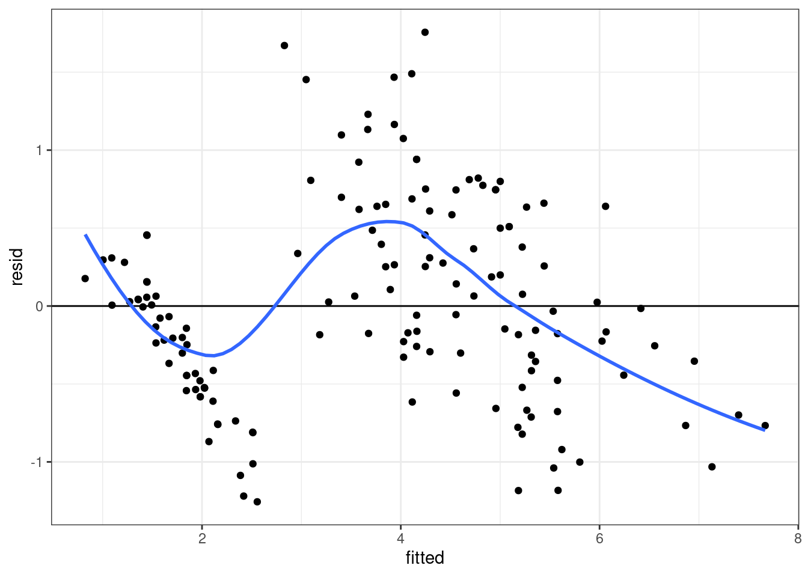
df_resid |>
ggplot(aes(sample = resid)) +
stat_qq() +
stat_qq_line() +
theme_bw()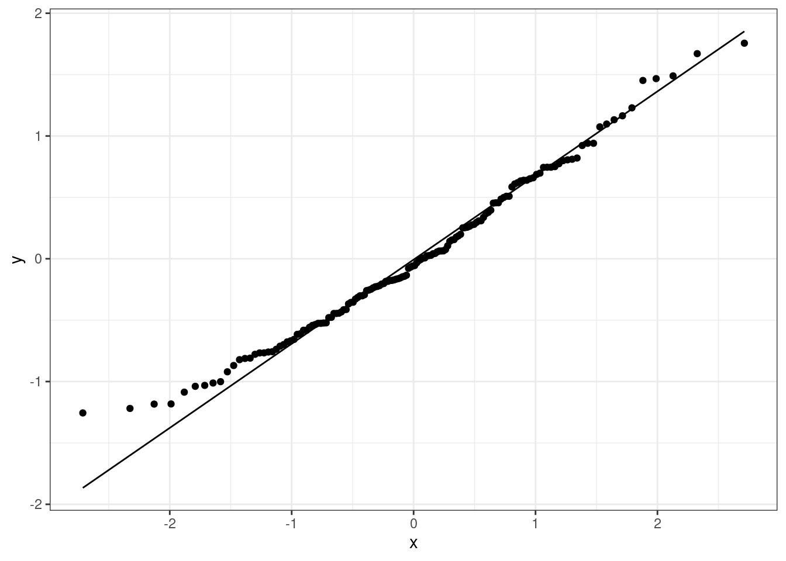
df_resid |>
ggplot(aes(Sepal.Length, resid)) + geom_point() +
geom_hline(yintercept = 0) +
stat_smooth(se = F) +
theme_bw()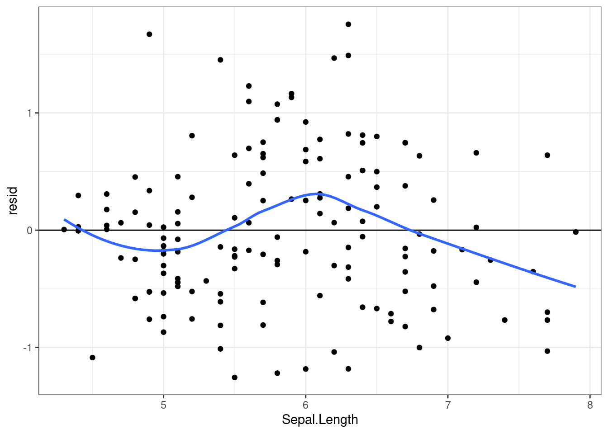
df_resid |>
ggplot(aes(Sepal.Width, resid)) + geom_point() +
geom_hline(yintercept = 0) +
stat_smooth(se = F) +
theme_bw()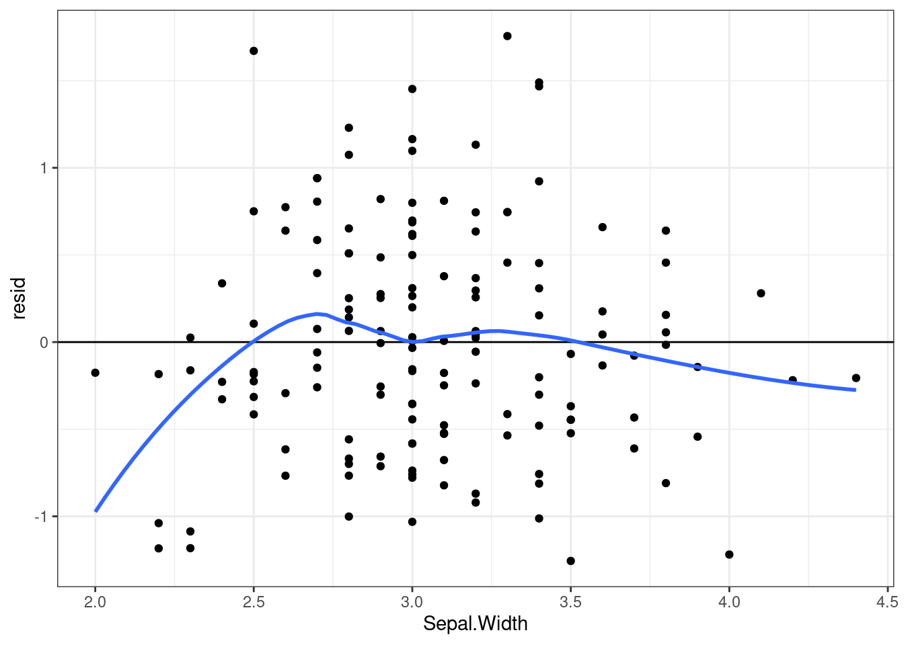
df_resid |>
ggplot(aes(obs, jackknife)) + geom_point() +
theme_bw()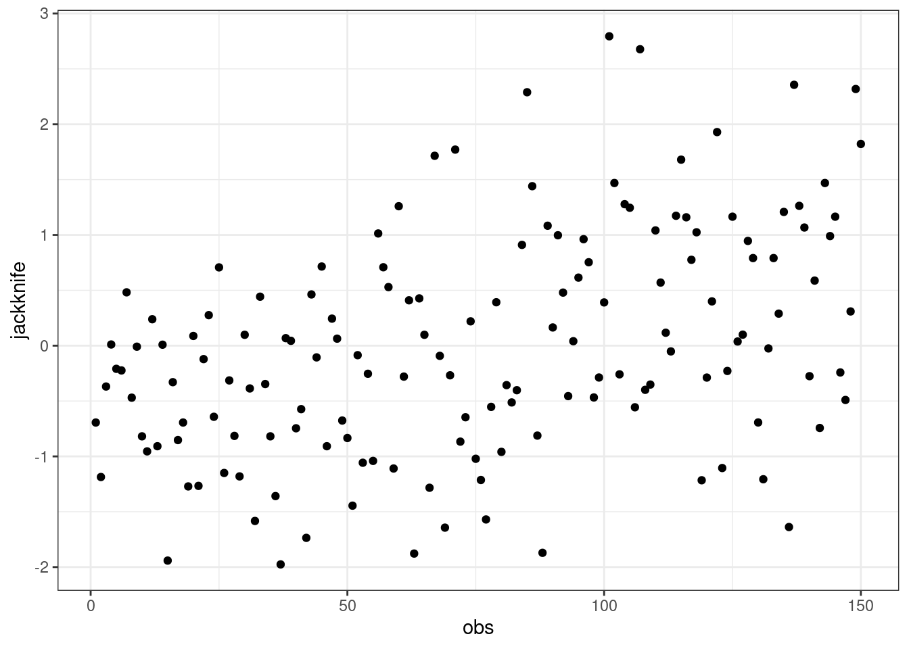
df_resid |>
ggplot(aes(obs, hatvals)) + geom_point() +
theme_bw()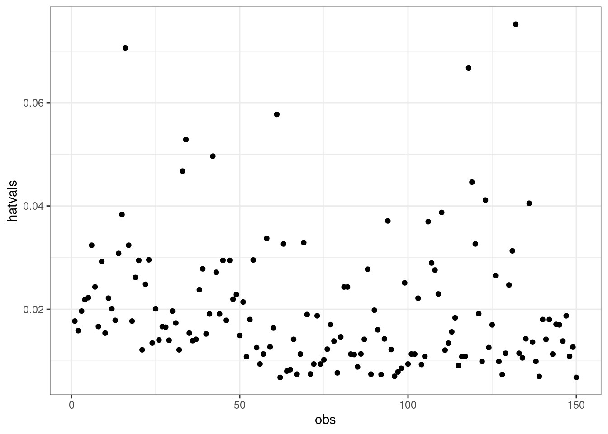
df_resid |>
ggplot(aes(obs, cooks)) +
geom_point() +
theme_bw()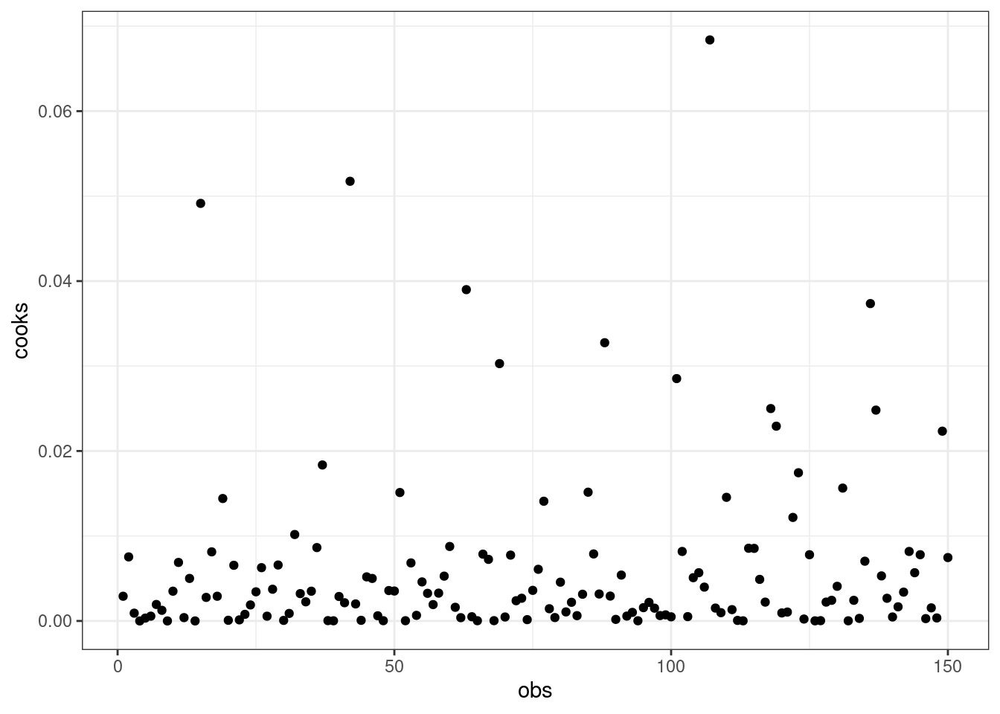
library(car)
iris |> with(cor(Sepal.Length, Sepal.Width))#> [1] -0.1175698vif(x_lm)#> Sepal.Length Sepal.Width
#> 1.014016 1.014016The taylor package contains the taylor_all_songs data frame with information on all of Taylor Swift’s Songs. Fit a linear regression model and run a residual analysis on the following equation:
\[ danceability = energy\ +\ speechiness\ +\ acousticness\ +\ instrumentalness \]